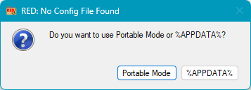

Config File

You MUST have write permissions in this folder.
By default Windows will prevent you from writing to files in your %ProgramFiles% [default=C:\Program Files] and %ProgramFiles(x86)% [default=C:\Program Files (x86)] folders.
%APPDATA% stores the config in your Windows user data folder.
This is typically C:\Users\<your-username>\AppData\Roaming\NotBob\RemoveEmptyDirectories
The persistent log (RED++.log) uses the same writable location. If the executable folder cannot be written to, it is written under %APPDATA% instead. The log keeps one rotated copy as RED++.log.1.
Undo manifests (RED++.undo.*.json) are stored under the current user's protected LocalAppData folder (%LOCALAPPDATA%\NotBob\RemoveEmptyDirectories) rather than beside a portable executable. This prevents another local account from planting a manifest in a shared install folder for a later restore.
Saved profiles (RED+.profiles.json) are stored next to the config file. Use -saveprofile / -profile / -listprofiles on the command line.
Config Keys (XML)
These keys can be edited manually in RED+.cfg. The config file includes a schemaVersion; older files are upgraded automatically on load.
| DeletionLockout | When true, every delete mode behaves as Simulate. No path (GUI or CLI) can mutate the filesystem. Override per-run with -no-lockout. Default: false. |
| CheckForUpdates | When true, checks the GitHub Releases API (once per day, ETag-cached) and reports when a newer version is available. No telemetry, no auto-download. Default: false. |
| ParallelScanDegree | Maximum parallel subdirectory scan threads (2-16, 0=serial). Intended for UNC/SMB roots where enumeration latency dominates. Default: 0 (serial). |
| RespectGitIgnore | When true, directories matching .gitignore rules are skipped. Default: false. |
| UseMftScan | When true, uses the MFT turbo scan (admin required). Default: false. |
| DeleteEmptyFiles | When true, also deletes standalone zero-byte files. Default: false. |